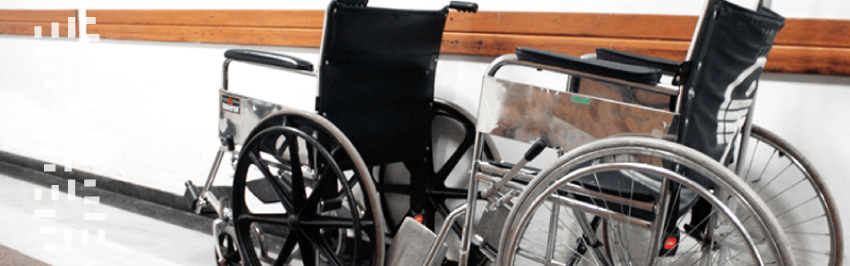

Entre las discapacidades motoras , que impiden la realización de ciertos movimientos, el desplazamiento de las personas y su autosuficiencia están:
Los accidentes cerebrovasculares, las atrofias musculares espinales, las distonías musculares, la espina bífica, la osteogénesis imperfecta menor conocida como niños de cristal, la parálisis cerebral, la poliomielitis, la acrocefalosindactilia o síndrome de Apert, el síndrome de Marfan y los traumatismos craneoencefálicos.
